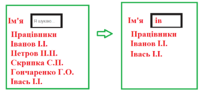
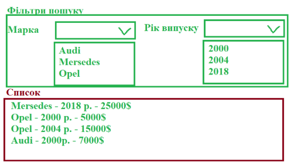

Домашнє завдання №20
-
Задача №1
Сяючі зорі. Вказана кількість зірочок повинна з’являтися у випадковій частині екрану. Кожна зірка (це екземпляр класу Star) з певним кроком і інтервалом збільшується від мінімального до максимального розміру. Як тільки досягнути максимального розміру зірочка повинна з’являтися у іншій випадковій позиції.
-
Задача №2
Байрактар. З верхньої частини екрану у випадковій позиції по горизонталі з’являються танки, які їдуть вниз. При кліку на танк він вибухає і зникає з екрану.
-
Задача №3
На формі вводять 7 числових значень (вік, зріст, вага, заробітна плата, стаж, номер відділу, порядковий номер). Додати подію обробки події click на форму і якщо клік на внутрішньому input, то автоматично замінювати значення його на 0. Використати делегування
-
Задача №4
На сторінці міститься певна кількість кнопок і інпутів. Підраховувати загальну кількість кліків окремо на кнопках і окремо на інпутах.
-
Задача №5
Динамічний пошук. Є список працівників і поле пошуку. При введенні відображаються усі, які містять вказаний фрагмент.
 -
Задача №6
Дано список автомобілів (марка, рік випуску, ціна). Сформувати елементи для фільтрування з використанням випадаючого списку (контент цих випадаючих списків сформувати у залежності від переданого списку).
